survey <- MASS::survey # to avoid loading the MASS library which will conflict with dplyr
head(survey$Pulse)[1] 92 104 87 NA 35 64mean(survey$Pulse)[1] NAThis chapter uses the following packages: mice, MASS, VIM, forestplot. Some examples use a modified version of the Parental HIV data set (Codebook) that has had some missing data created for demonstration purposes.
Missing Data happens. Not always
This is a very brief, and very rough overview of identification and treatment of missing data. For more details (enough for an entire class) see Flexible Imputation of Missing Data, 2nd Ed by Stef van Buuren:
R is denoted as NAsurvey <- MASS::survey # to avoid loading the MASS library which will conflict with dplyr
head(survey$Pulse)[1] 92 104 87 NA 35 64mean(survey$Pulse)[1] NAThe summary() function will always show missing.
summary(survey$Pulse) Min. 1st Qu. Median Mean 3rd Qu. Max. NA's
35.00 66.00 72.50 74.15 80.00 104.00 45 The is.na() function is helpful to identify rows with missing data
table(is.na(survey$Pulse))
FALSE TRUE
192 45 The function table() will not show NA by default.
table(survey$M.I)
Imperial Metric
68 141 table(survey$M.I, useNA="always")
Imperial Metric <NA>
68 141 28 round(prop.table(table(is.na(survey)))*100,1)
FALSE TRUE
96.2 3.8 4% of the data points are missing.
prop.miss <- apply(survey, 2, function(x) round(sum(is.na(x))/NROW(x),4))
prop.miss Sex Wr.Hnd NW.Hnd W.Hnd Fold Pulse Clap Exer Smoke Height M.I
0.0042 0.0042 0.0042 0.0042 0.0000 0.1899 0.0042 0.0000 0.0042 0.1181 0.1181
Age
0.0000 The amount of missing data per variable varies from 0 to 19%.
pmpv <- data.frame(variable = names(survey), pct.miss =prop.miss)
ggplot(pmpv, aes(x=variable, y=pct.miss)) +
geom_bar(stat="identity") + ylab("Percent") + scale_y_continuous(labels=scales::percent, limits=c(0,1)) +
geom_text(data=pmpv, aes(label=paste0(round(pct.miss*100,1),"%"), y=pct.miss+.025), size=4)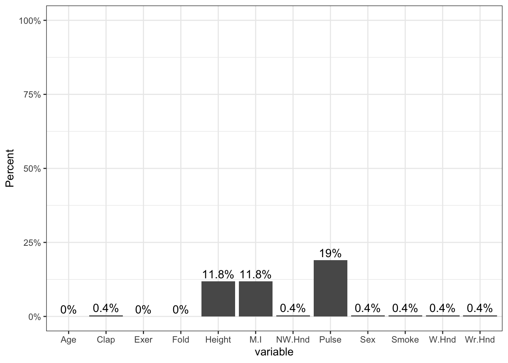
library(mice)
md.pattern(survey)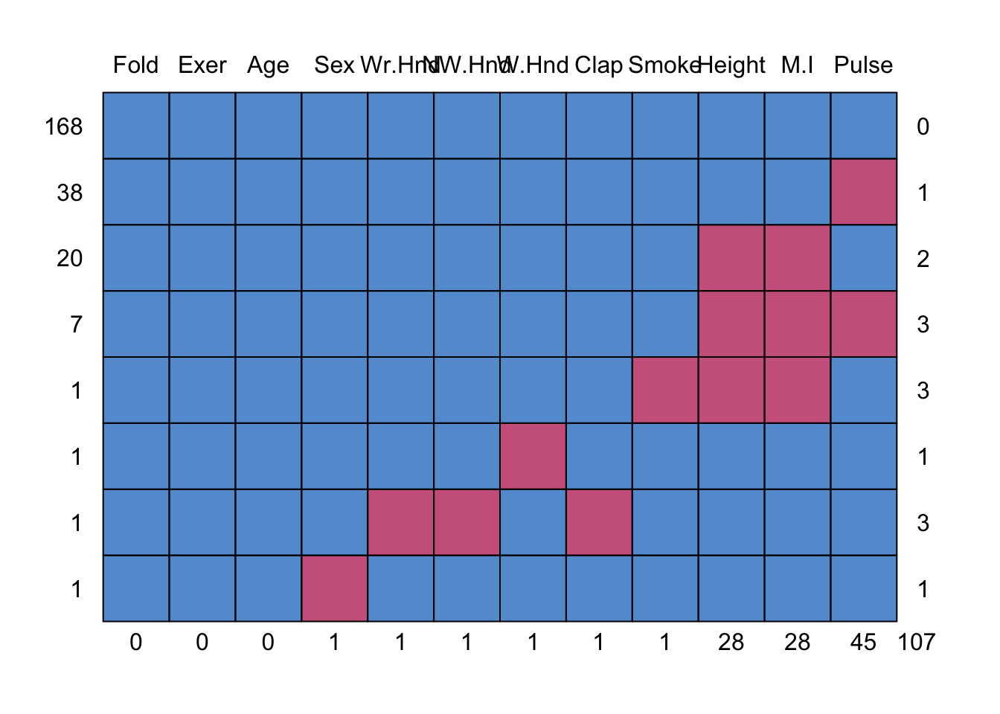
Fold Exer Age Sex Wr.Hnd NW.Hnd W.Hnd Clap Smoke Height M.I Pulse
168 1 1 1 1 1 1 1 1 1 1 1 1 0
38 1 1 1 1 1 1 1 1 1 1 1 0 1
20 1 1 1 1 1 1 1 1 1 0 0 1 2
7 1 1 1 1 1 1 1 1 1 0 0 0 3
1 1 1 1 1 1 1 1 1 0 0 0 1 3
1 1 1 1 1 1 1 0 1 1 1 1 1 1
1 1 1 1 1 0 0 1 0 1 1 1 1 3
1 1 1 1 0 1 1 1 1 1 1 1 1 1
0 0 0 1 1 1 1 1 1 28 28 45 107This somewhat ugly output tells us that 168 records have no missing data, 38 records are missing only Pulse and 20 are missing both Height and M.I.
library(VIM)
aggr(survey, col=c('chartreuse3','mediumvioletred'),
numbers=TRUE, sortVars=TRUE,
labels=names(survey), cex.axis=.7,
gap=3, ylab=c("Missing data","Pattern"))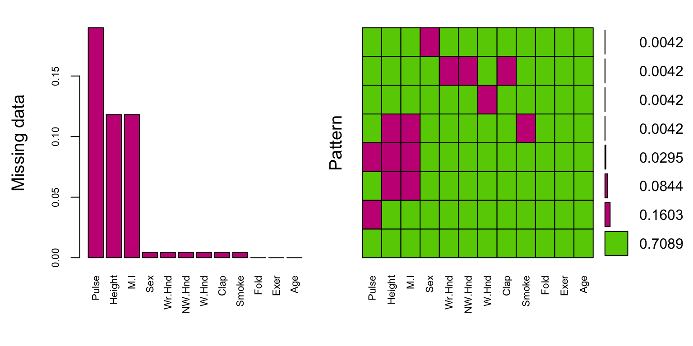
The plot on the left is a simplified, and ordered version of the ggplot from above, except the bars appear to be inflated because the y-axis goes up to 15% instead of 100%.
The plot on the right shows the missing data patterns, and indicate that 71% of the records has complete cases, and that everyone who is missing M.I. is also missing Height.
Another plot that can be helpful to identify patterns of missing data is a marginplot (also from VIM).
marginplot(survey[,c(6,10)])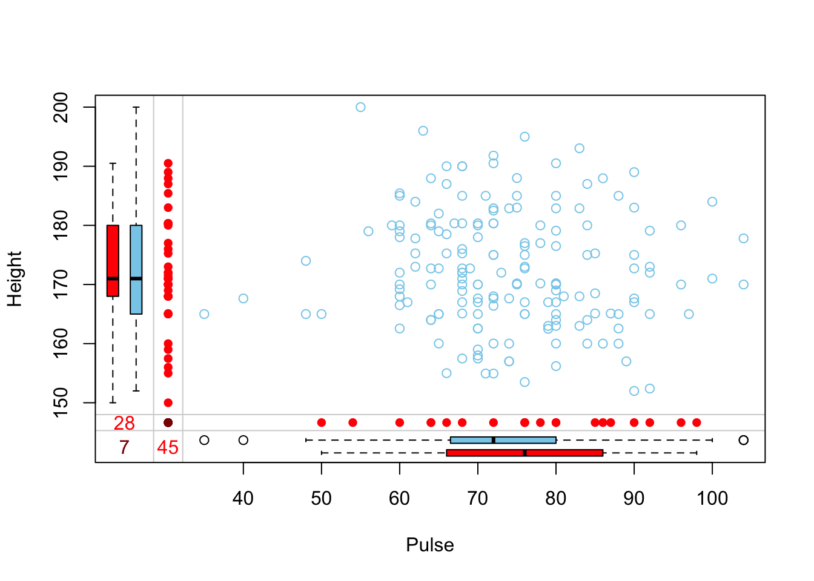
This shows us that the observations missing pulse have the same median height, but those missing height have a higher median pulse rate.
Identify missing
Entire data set:
table(is.na(hiv)) |> prop.table()
FALSE TRUE
0.96330127 0.03669873 Only 3.7% of all values in the data set are missing.
Examine missing data patterns of scale variables.
The parental bonding and BSI scale variables are aggregated variables, meaning they are sums or means of a handful of component variables. That means if any one component variable is missing, the entire scale is missing. E.g. if y = x1+x2+x3, then y is missing if any of x1, x2 or x3 are missing.
scale.vars <- hiv %>% select(parent_care:bsi_psycho, gender, siblings, age)
aggr(scale.vars, sortVars=TRUE, combined=TRUE, numbers=TRUE, cex.axis=.7)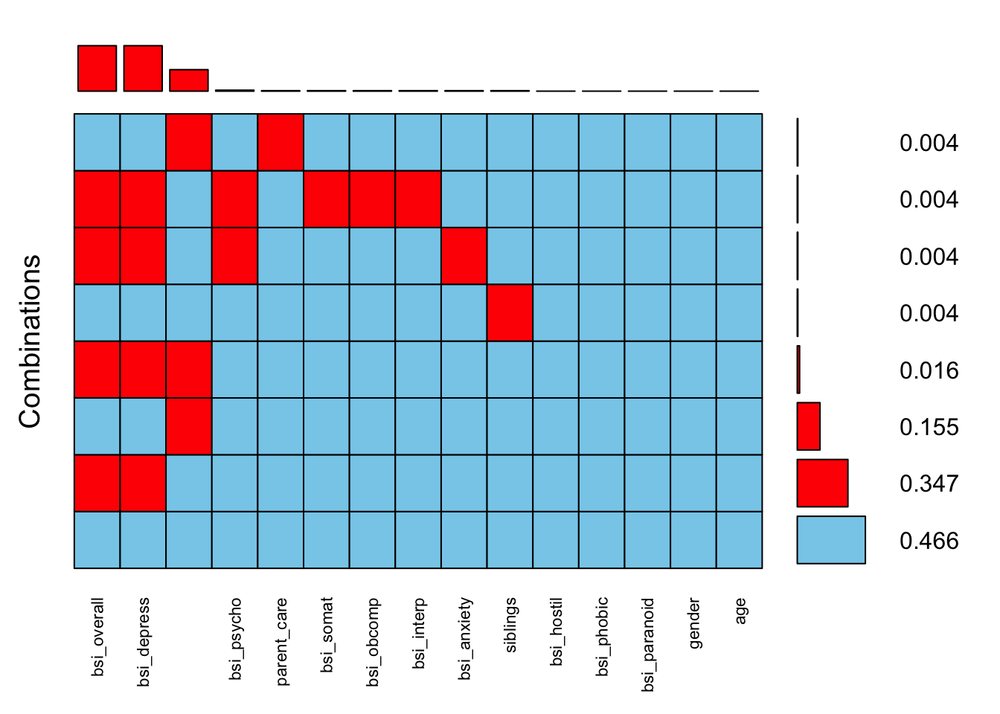
Variables sorted by number of missings:
Variable Count
bsi_overall 93
bsi_depress 93
parent_overprotection 44
bsi_psycho 2
parent_care 1
bsi_somat 1
bsi_obcomp 1
bsi_interp 1
bsi_anxiety 1
siblings 1
bsi_hostil 0
bsi_phobic 0
bsi_paranoid 0
gender 0
age 034.7% of records are missing both bsi_overall and bsi_depress. This makes sense since bsi_depress is a subscale containing 9 component variables and the bsi_overall is an average of all 52.
Another 15.5% of records are missing parental_overprotection.
Is there a bivariate pattern between missing and observed values of bsi_depress and parent_overprotection?
marginplot(hiv[,c('bsi_depress', 'parent_overprotection')])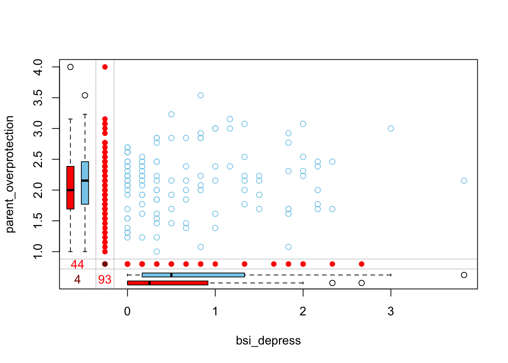
When someone is missing parent_overprotection, they have a lower bsi_depress score. Those missing bsi_depress have a slightly lower parental_overprotection score. Only 4 individuals are missing both values.
Example reported in W.G. Cochran, Sampling Techniques, 3rd edition, 1977, ch. 13:
Consider data that come form an experimental sampling of fruit orcharts in North Carolina in 1946. Three successive mailings of the same questionnaire were sent to growers. For one of the questions the number of fruit trees, complete data were available for the population…
| Ave. # trees | # of growers | % of pop’n | Ave # trees/grower |
|---|---|---|---|
| 1st mailing responders | 300 | 10 | 456 |
| 2nd mailing responders | 543 | 17 | 382 |
| 3rd mailing responders | 434 | 14 | 340 |
| Nonresponders | 1839 | 59 | 290 |
| ——– | ——– | ——– | |
| Total population | 3116 | 100 | 329 |
Bias: The difference between the observed estimate \(\bar{y}_{1}\) and the true parameter \(\mu\).
\[ \begin{aligned} E(\bar{y}_{1}) - \mu & = \bar{Y_{1}} - \bar{Y} \\ & = \bar{Y}_{1} - \left[(1-w)\bar{Y}_{1} - w\bar{Y}_{2}\right] \\ & = w(\bar{Y}_{1} - \bar{Y}_{2}) \end{aligned} \]
Where \(w\) is the proportion of non-response.
Process by which some units observed, some units not observed
Write down an example of each.
Does it matter to inferences? Yes!
What follows is just one method of approaching this problem via code. Simulation is a frequently used technique to understand the behavior of a process over time or over repeated samples.
set.seed(456) # setting a seed ensures the same numbers will be drawn each time
z <- rnorm(100)
mean.z <- mean(z)
mean.z[1] 0.1205748Sample 100 random Bernoulli (0/1) variables with probability \(p\).
x <- rbinom(100, 1, p=.5)Find out which elements are are 1’s
delete.these <- which(x==1)Set those elements in z to NA.
z[delete.these] <- NACalculate the complete case mean
mean(z, na.rm=TRUE)[1] 0.1377305mean(z, na.rm=TRUE) - mean.z[1] 0.01715565How does the bias change as a function of the proportion of missing? Let \(p\) range from 0% to 99% and plot the bias as a function of \(p\).
calc.bias <- function(p){ # create a function to handle the repeated calculations
mean(ifelse(rbinom(100, 1, p)==1, NA, z), na.rm=TRUE) - mean.z
}
p <- seq(0,.99,by=.01)
plot(c(0,1), c(-1, 1), type="n", ylab="Bias", xlab="Proportion of missing")
points(p, sapply(p, calc.bias), pch=16)
abline(h=0, lty=2, col="blue")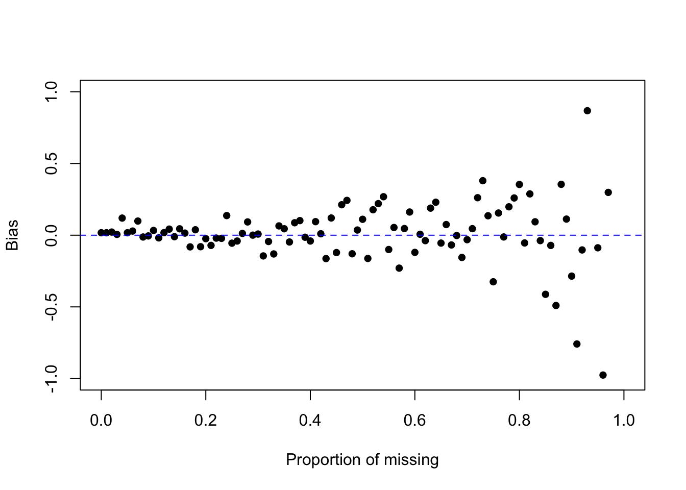
What is the behavior of the bias as \(p\) increases? Look specifically at the position/location of the bias, and the variance/variability of the bias.
What if the rate of missing is related to the value of the outcome? Again, let’s setup a simulation to see how this works.
Z <- rnorm(100)
p <- runif(100, 0, 1)dta <- data.frame(Z=sort(Z), p=sort(p))
head(dta) Z p
1 -2.898122 0.003673455
2 -2.185058 0.013886146
3 -2.076032 0.035447986
4 -1.938288 0.039780643
5 -1.930809 0.051362816
6 -1.905331 0.054639596ggplot(dta, aes(x=p, y=Z)) + geom_point() + xlab("P(missing)") + ylab("Z~Normal(0,1)")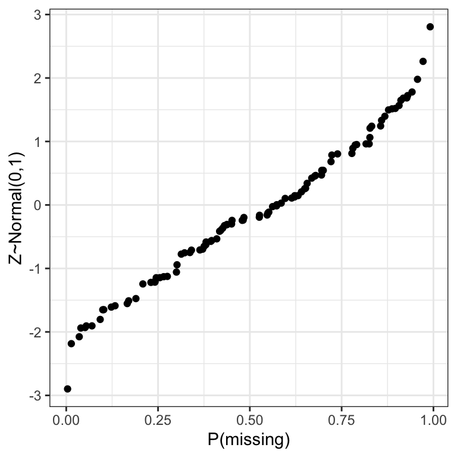
dta$z.miss that is either 0, or the value of dta$Z with probability 1-dta$p. Then change all the 0’s to NA.dta$Z.miss <- dta$Z * (1-rbinom(NROW(dta), 1, dta$p))
head(dta) # see structure of data to understand what is going on Z p Z.miss
1 -2.898122 0.003673455 -2.898122
2 -2.185058 0.013886146 -2.185058
3 -2.076032 0.035447986 -2.076032
4 -1.938288 0.039780643 -1.938288
5 -1.930809 0.051362816 -1.930809
6 -1.905331 0.054639596 -1.905331dta$Z.miss[dta$Z.miss==0] <- NAmean(dta$Z.miss, na.rm=TRUE)[1] -0.7777319mean(dta$Z) - mean(dta$Z.miss, na.rm=TRUE)[1] 0.6830372Did the complete case estimate over- or under-estimate the true mean? Is the bias positive or negative?
Consider a hypothetical blood test to measure a hormone that is normally distributed in the blood with mean 10\(\mu g\) and variance 1. However the test to detect the compound only can detect levels above 10.
z <- rnorm(100, 10, 1)
y <- z
y[y<10] <- NA
mean(z) - mean(y, na.rm=TRUE)[1] -0.6850601Did the complete case estimate over- or under-estimate the true mean?
Degrees of difficulty
Evidence?
What can we learn from evidence in the data set at hand?
What is plausible?
Ignorable Missing
Strategies for handling missing data include:
If not all variables observed, delete case from analysis
Fill in missing values, analyze completed data set
This section demonstrates each imputation method on the bsi_depress scale variable from the parental HIV example. To recap, 37% of the data on this variable is missing.
Create an index of row numbers containing missing values. This will be used to fill in those missing values with a data value.
miss.dep.idx<- which(is.na(hiv$bsi_depress))
head(miss.dep.idx) [1] 2 4 5 9 13 14For demonstration purposes I will also create a copy of the bsi_depress variable so that the original is not overwritten for each example.
bsi_depress.ums <- hiv$bsi_depress # copy
complete.case.mean <- mean(hiv$bsi_depress, na.rm=TRUE)
bsi_depress.ums[miss.dep.idx] <- complete.case.mean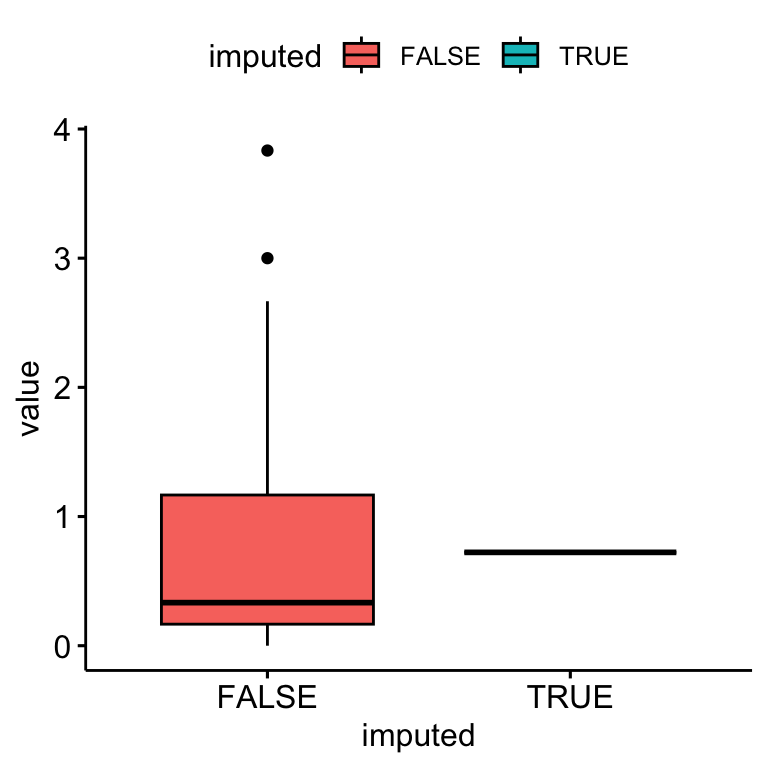
Only a single value was used to impute missing data.
hotdeck function in VIM availablebsi_depress.hotdeck<- hiv$bsi_depress # copy
hot.deck <- sample(na.omit(hiv$bsi_depress), size = length(miss.dep.idx))
bsi_depress.hotdeck[miss.dep.idx] <- hot.deck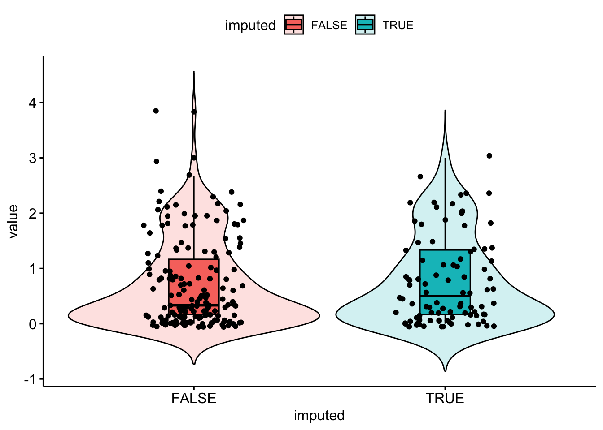
The distribution of imputed values better matches the distribution of observed data, but the distribution (Q1, Q3) is shifted lower a little bit.
VIM::regressionImp() functionModel bsi_depress using gender, siblings and age as predictors using linear regression.
reg.model <- lm(bsi_depress ~ gender + siblings + age, hiv)
need.imp <- hiv[miss.dep.idx, c("gender", "siblings", "age")]
reg.imp.vals <- predict(reg.model, newdata = need.imp)
bsi_depress.lm <- hiv$bsi_depress # copy
bsi_depress.lm[miss.dep.idx] <- reg.imp.vals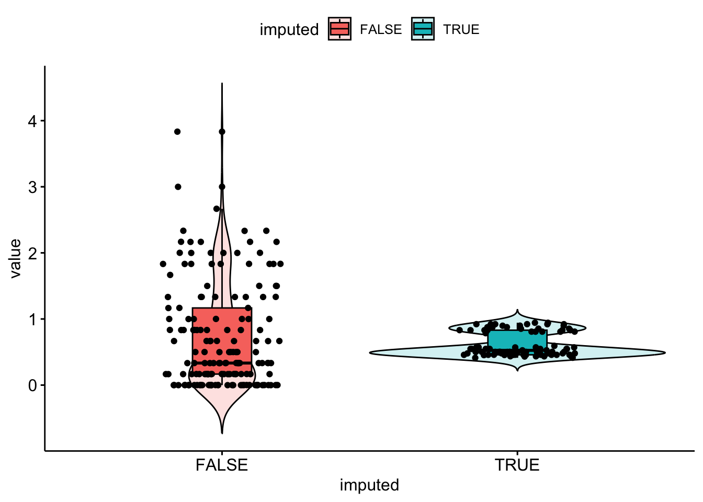
It seems like only values around 0.5 and 0.8 were imputed values for bsi_depress. The imputed values don’t quite match the distribution of observed values. Regression imputation and PMM seem to perform extremely similarily.
set.seed(1337)
rmse <- sqrt(summary(reg.model)$sigma)
eps <- rnorm(length(miss.dep.idx), mean=0, sd=rmse)
bsi_depress.lm.resid <- hiv$bsi_depress # copy
bsi_depress.lm.resid[miss.dep.idx] <- reg.imp.vals + eps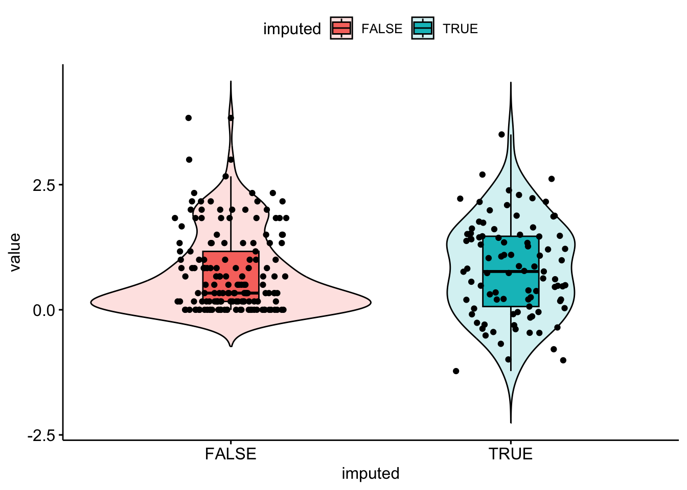
Well, the distribution of imputed values is spread out a bit more, but the imputations do not respect the truncation at 0 this bsi_depress value has.
Create a table and plot that compares the point estimates and intervals for the average bsi depression scale.
single.imp <- bind_rows(
data.frame(value = na.omit(hiv$bsi_depress), method = "Observed"),
data.frame(value = bsi_depress.ums, method = "Mean Sub"),
data.frame(value = bsi_depress.hotdeck, method = "Hot Deck"),
data.frame(value = bsi_depress.lm, method = "Regression"),
data.frame(value = bsi_depress.lm.resid, method = "Reg + eps"))
single.imp$method <- forcats::fct_relevel(single.imp$method ,
c("Observed", "Mean Sub", "Hot Deck", "Regression", "Reg + eps"))
si.ss <- single.imp %>%
group_by(method) %>%
summarize(mean = mean(value),
sd = sd(value),
se = sd/sqrt(n()),
cil = mean-1.96*se,
ciu = mean+1.96*se)
si.ss# A tibble: 5 × 6
method mean sd se cil ciu
<fct> <dbl> <dbl> <dbl> <dbl> <dbl>
1 Observed 0.723 0.782 0.0622 0.601 0.844
2 Mean Sub 0.723 0.620 0.0391 0.646 0.799
3 Hot Deck 0.738 0.783 0.0494 0.641 0.835
4 Regression 0.682 0.631 0.0399 0.604 0.760
5 Reg + eps 0.753 0.848 0.0536 0.648 0.858ggviolin(single.imp, y = "value",
fill = "method", x = "method",
add = "boxplot",
alpha = .2)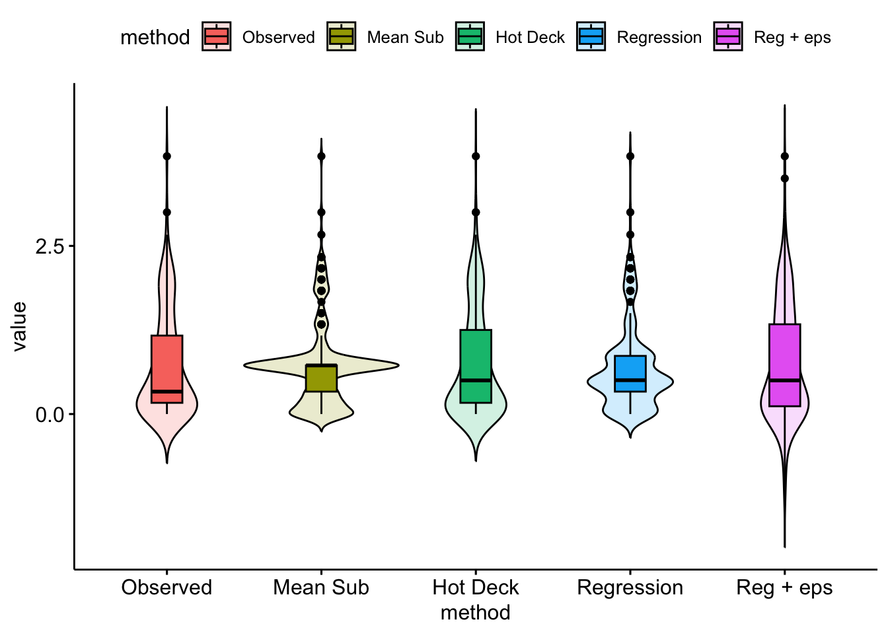
ggplot(si.ss, aes(x=mean, y = method, col=method)) +
geom_point() + geom_errorbar(aes(xmin=cil, xmax=ciu), width=0.2) +
scale_x_continuous(limits=c(.5, 1)) +
theme_bw() + xlab("Average BSI Depression score") + ylab("")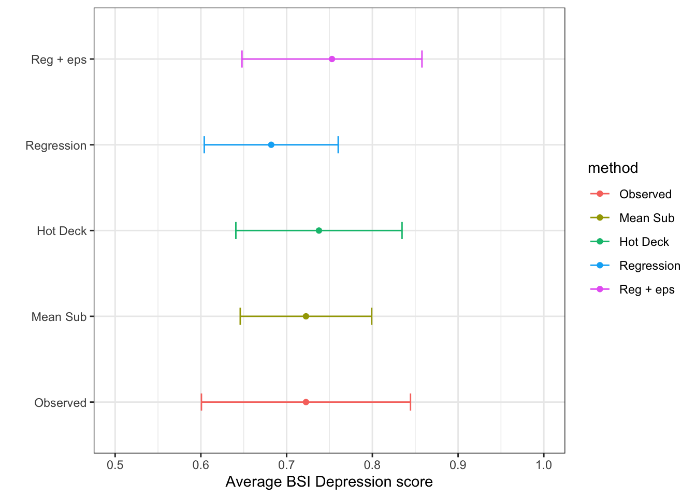
…but we can do better.

(Rubin, Multiple Imputation for Nonresponse in Surveys, Wiley, 1987)
Consider \(m\) imputed data sets. For some quantity of interest \(Q\) with squared \(SE = U\), calculate \(Q_{1}, Q_{2}, \ldots, Q_{m}\) and \(U_{1}, U_{2}, \ldots, U_{m}\) (e.g., carry out \(m\) regression analyses, obtain point estimates and SE from each).
Then calculate the average estimate \(\bar{Q}\), the average variance \(\bar{U}\), and the variance of the averages \(B\).
\[ \begin{aligned} \bar{Q} & = \sum^{m}_{i=1}Q_{i}/m \\ \bar{U} & = \sum^{m}_{i=1}U_{i}/m \\ B & = \frac{1}{m-1}\sum^{m}_{i=1}(Q_{i}-\bar{Q})^2 \end{aligned} \]
Then \(T = \bar{U} + \frac{m+1}{m}B\) is the estimated total variance of \(\bar{Q}\).
Significance tests and interval estimates can be based on
\[\frac{\bar{Q}-Q}{\sqrt{T}} \sim t_{df}, \mbox{ where } df = (m-1)(1+\frac{1}{m+1}\frac{\bar{U}}{B})^2\]
set.seed(1061)
dep.imp1 <- dep.imp2 <- dep.imp3 <- regressionImp(bsi_depress ~ gender + siblings + age, hiv)
dep.imp1$bsi_depress[miss.dep.idx] <- dep.imp1$bsi_depress[miss.dep.idx] +
rnorm(length(miss.dep.idx), mean=0, sd=rmse/2)
dep.imp2$bsi_depress[miss.dep.idx] <- dep.imp2$bsi_depress[miss.dep.idx] +
rnorm(length(miss.dep.idx), mean=0, sd=rmse/2)
dep.imp3$bsi_depress[miss.dep.idx] <- dep.imp3$bsi_depress[miss.dep.idx] +
rnorm(length(miss.dep.idx), mean=0, sd=rmse/2)Visualize the distributions of observed and imputed
dep.mi <- bind_rows(
data.frame(value = dep.imp1$bsi_depress, imputed = dep.imp1$bsi_depress_imp,
imp = "dep.imp1"),
data.frame(value = dep.imp2$bsi_depress, imputed = dep.imp2$bsi_depress_imp,
imp ="dep.imp2"),
data.frame(value = dep.imp3$bsi_depress, imputed = dep.imp3$bsi_depress_imp,
imp ="dep.imp3"))
ggdensity(dep.mi, x = "value", color = "imputed", fill = "imputed",
add = "mean", rug=TRUE, palette = "jco") +
facet_wrap(~imp, ncol=1)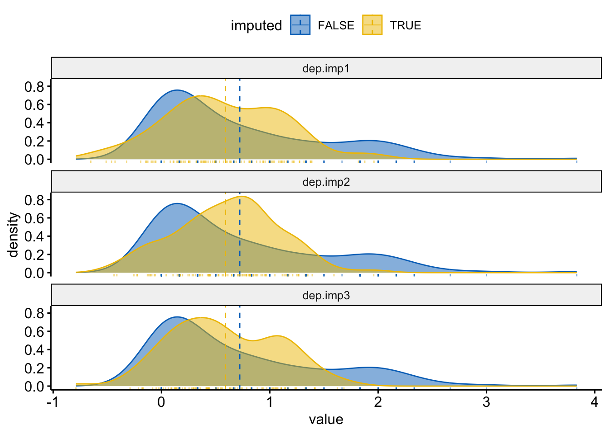
(Q <- c(mean(dep.imp1$bsi_depress),
mean(dep.imp2$bsi_depress),
mean(dep.imp3$bsi_depress)))[1] 0.6700139 0.6808710 0.6694280n.d <- length(dep.imp1$bsi_depress)
(U <- c(sd(dep.imp1$bsi_depress)/sqrt(n.d),
sd(dep.imp2$bsi_depress)/sqrt(n.d),
sd(dep.imp3$bsi_depress)/sqrt(n.d)))[1] 0.04443704 0.04324317 0.04365866Q.bar <- mean(Q) # average estimate
U.bar <- mean(U) # average variance
B <- sd(Q) # variance of averages
Tv <- U.bar + ((3+1)/3)*B # Total variance of estimate
df <- 2*(1+(U.bar/(4*B))^2) # degress of freedom
t95 <- qt(.975, df) # critical value for 95% CI
mi.ss <- data.frame(
method = "MI Reg",
mean = Q.bar,
se = sqrt(Tv),
cil = Q.bar - t95*sqrt(Tv),
ciu = Q.bar + t95*sqrt(Tv))
(imp.ss <- bind_rows(si.ss, mi.ss))# A tibble: 6 × 6
method mean sd se cil ciu
<chr> <dbl> <dbl> <dbl> <dbl> <dbl>
1 Observed 0.723 0.782 0.0622 0.601 0.844
2 Mean Sub 0.723 0.620 0.0391 0.646 0.799
3 Hot Deck 0.738 0.783 0.0494 0.641 0.835
4 Regression 0.682 0.631 0.0399 0.604 0.760
5 Reg + eps 0.753 0.848 0.0536 0.648 0.858
6 MI Reg 0.673 NA 0.229 0.143 1.20 ggplot(imp.ss, aes(x=mean, y = method, col=method)) +
geom_point() + geom_errorbar(aes(xmin=cil, xmax=ciu), width=0.2) +
scale_x_continuous(limits=c(-.3, 2)) +
theme_bw() + xlab("Average BSI Depression score") + ylab("")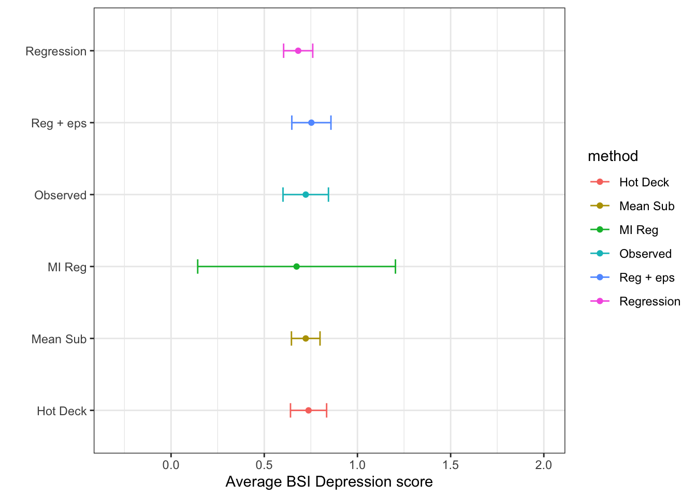
Your best reference guide to this section of the notes is the bookdown version of Flexible Imputation of Missing Data, by Stef van Buuren
For a more technical details about how the mice function works in R, see Journal of Statistical Software
Consider a data matrix with 3 variables \(y_{1}\), \(y_{2}\), \(y_{3}\), each with missing values. At iteration \((\ell)\):
where \((\ell)\) cycles from 1 to \(L\), before an imputed value is drawn.
How many imputations (\(m\)) should we create and how many iterations (\(L\)) should I run between imputations?
mice - so generating a larger number of imputations (say \(m=40\)) are more common (Pan, 2016)Read 6.5.2: Convergence from Flexible Imputation of Missing Data
Some built-in imputation methods in the mice package are:
Q: How do I know if the imputed values are plausible?
A: Create diagnostic graphics that plot the observed and imputed values together.
Refer to 6.6 Diagnostics of Flexible Imputation of Missing Data.
We will demonstrate using the Palmer Penguins dataset where we can artificially create a prespecified percent of the data missing, (after dropping the 11 rows missing sex) This allows us to be able to estimate the bias incurred by using these imputation methods.
For the penguin data ) out we set a seed and use the prodNA() function from the missForest package to create 10% missing values in this data set.
library(missForest)
set.seed(12345) # Raspberry, I HATE raspberry!
pen.nomiss <- na.omit(pen)
pen.miss <- prodNA(pen.nomiss, noNA=0.1)
prop.table(table(is.na(pen.miss)))
FALSE TRUE
0.90015015 0.09984985 Visualize missing data pattern.
aggr(pen.miss, col=c('darkolivegreen3','salmon'),
numbers=TRUE, sortVars=TRUE,
labels=names(pen.miss), cex.axis=.7,
gap=3, ylab=c("Missing data","Pattern"))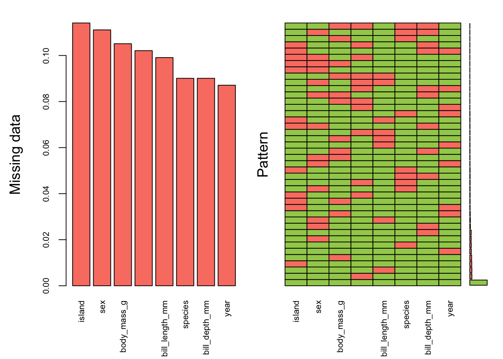
Variables sorted by number of missings:
Variable Count
island 0.11411411
sex 0.11111111
body_mass_g 0.10510511
flipper_length_mm 0.10210210
bill_length_mm 0.09909910
species 0.09009009
bill_depth_mm 0.09009009
year 0.08708709Here’s another example of where only 10% of the data overall is missing, but it results in only 58% complete cases.
mice()imp_pen <- mice(pen.miss, m=10, maxit=25, meth="pmm", seed=500, printFlag=FALSE)
summary(imp_pen)Class: mids
Number of multiple imputations: 10
Imputation methods:
species island bill_length_mm bill_depth_mm
"pmm" "pmm" "pmm" "pmm"
flipper_length_mm body_mass_g sex year
"pmm" "pmm" "pmm" "pmm"
PredictorMatrix:
species island bill_length_mm bill_depth_mm flipper_length_mm
species 0 1 1 1 1
island 1 0 1 1 1
bill_length_mm 1 1 0 1 1
bill_depth_mm 1 1 1 0 1
flipper_length_mm 1 1 1 1 0
body_mass_g 1 1 1 1 1
body_mass_g sex year
species 1 1 1
island 1 1 1
bill_length_mm 1 1 1
bill_depth_mm 1 1 1
flipper_length_mm 1 1 1
body_mass_g 0 1 1This Stack Exchange post has a great explanation/description of what each of these arguments control. It is a very good idea to understand these controls.
imp_pen$meth species island bill_length_mm bill_depth_mm
"pmm" "pmm" "pmm" "pmm"
flipper_length_mm body_mass_g sex year
"pmm" "pmm" "pmm" "pmm" Predictive mean matching was used for all variables, even species and island. This is reasonable because PMM is a hot deck method of imputation.
plot(imp_pen, c("bill_length_mm", "body_mass_g", "bill_depth_mm"))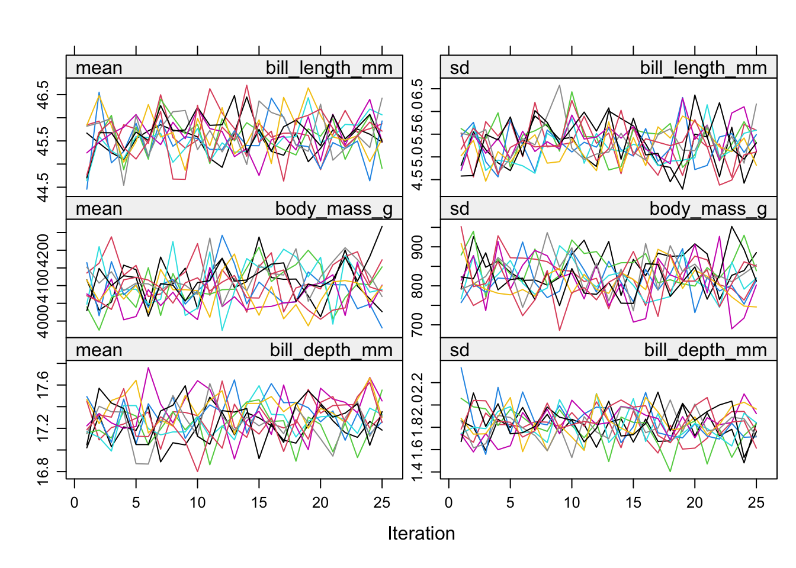
The variance across chains is no larger than the variance within chains.
imp_pen$imp$body_mass_g |> head() 1 2 3 4 5 6 7 8 9 10
3 3800 3750 3550 3900 3550 3300 3400 3900 3450 3900
8 3300 3150 3525 3150 3500 3150 3325 3200 3325 3300
13 4300 4050 4500 4000 4675 4550 4050 3950 4575 4550
35 3400 3900 4075 3600 3900 3700 3900 3425 4725 3250
41 3600 4300 3900 3600 3950 3900 3500 3900 4150 4100
45 2700 3100 3625 3700 3525 3800 3575 3100 3575 3525This is just for us to see what this imputed data look like. Each column is an imputed value, each row is a row where an imputation for body_mass_g was needed. Notice only imputations are shown, no observed data is showing here.
pen_1 <- complete(imp_pen, action=1)Action=1 returns the first completed data set, action=2 returns the second completed data set, and so on.
Alternative - Stack the imputed data sets in long format.
pen_long <- complete(imp_pen, 'long')By looking at the names of this new object we can confirm that there are indeed 10 complete data sets with \(n=333\) in each.
names(pen_long) [1] ".imp" ".id" "species"
[4] "island" "bill_length_mm" "bill_depth_mm"
[7] "flipper_length_mm" "body_mass_g" "sex"
[10] "year" table(pen_long$.imp)
1 2 3 4 5 6 7 8 9 10
333 333 333 333 333 333 333 333 333 333 Let’s compare the imputed values to the observed values to see if they are indeed “plausible”. We want to see that the distribution of of the magenta points (imputed) matches the distribution of the blue ones (observed).
densityplot(imp_pen)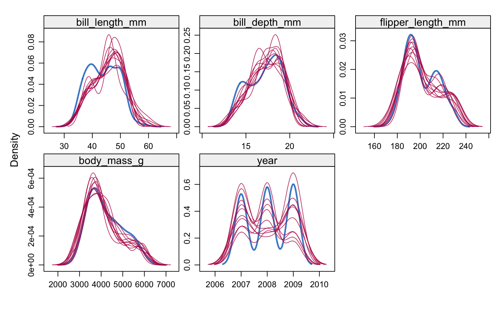
xyplot(imp_pen, bill_length_mm ~ bill_depth_mm + flipper_length_mm | species + island, cex=.8, pch=16)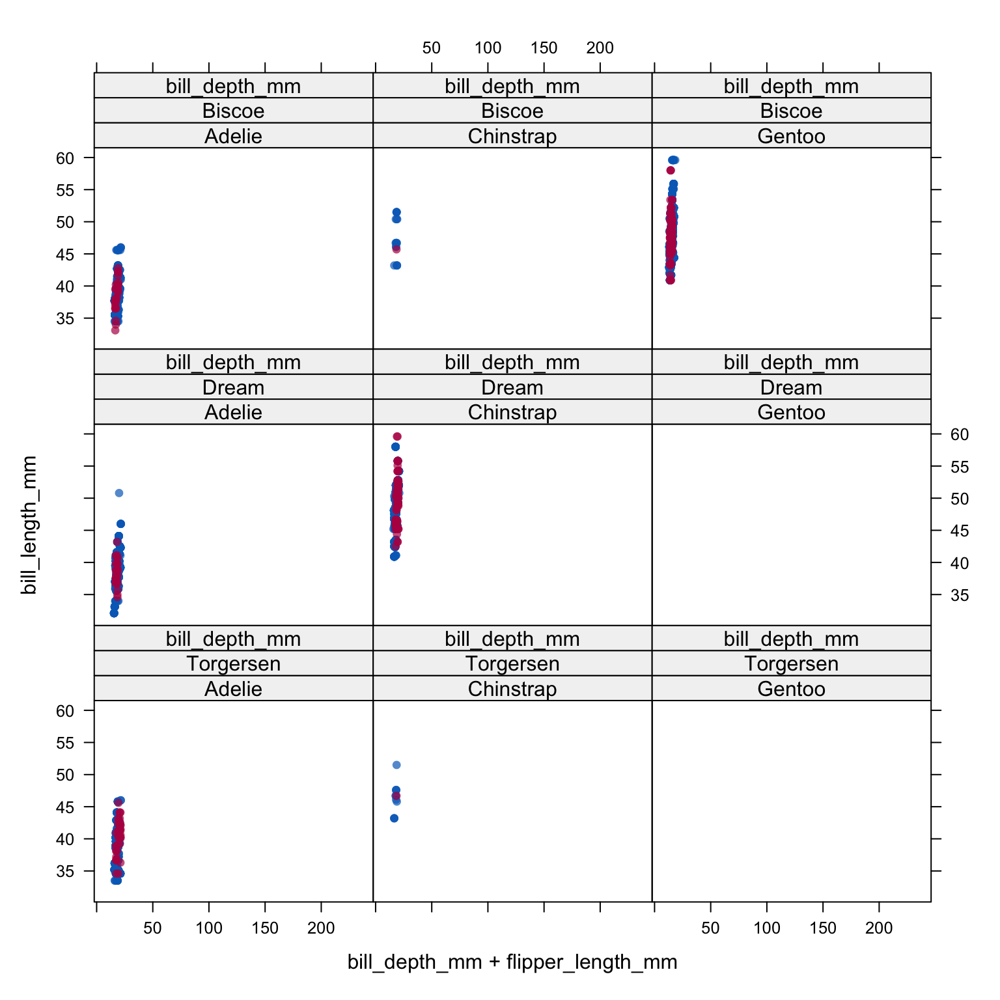
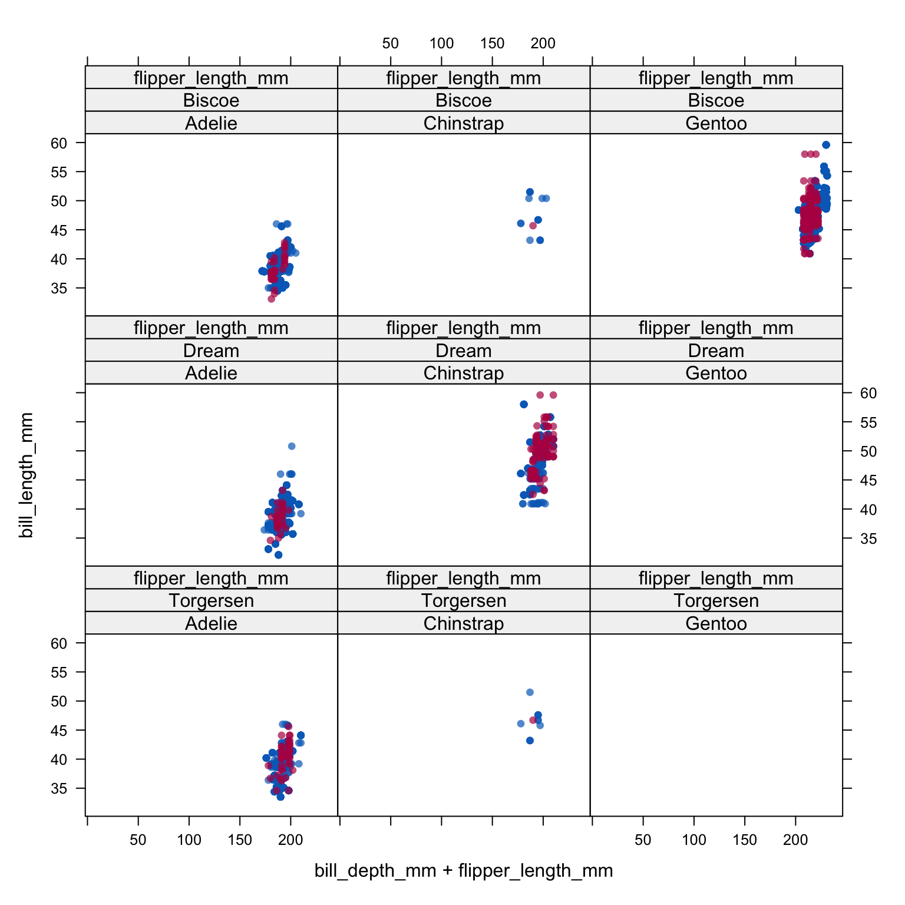
Analyze and pool All of this imputation was done so we could actually perform an analysis!
Let’s run a simple linear regression on body_mass_g as a function of bill_length_mm, flipper_length_mm and species.
model <- with(imp_pen, lm(body_mass_g ~ bill_length_mm + flipper_length_mm + species))
summary(pool(model)) term estimate std.error statistic df p.value
1 (Intercept) -3758.87511 577.502100 -6.508851 205.80708 5.670334e-10
2 bill_length_mm 51.61565 9.013278 5.726624 49.20373 6.081152e-07
3 flipper_length_mm 28.67977 3.819019 7.509722 84.41687 5.618897e-11
4 speciesChinstrap -615.76862 97.112862 -6.340753 68.84331 2.051941e-08
5 speciesGentoo 155.61083 92.618867 1.680120 298.97391 9.397845e-02Pooled parameter estimates \(\bar{Q}\) and their standard errors \(\sqrt{T}\) are provided, along with a significance test (against \(\beta_p=0\)). Note with this output that a 95% interval must be calculated manually.
We can leverage the gtsummary package to tidy and print the results of a mids object, but the mice object has to be passed to tbl_regression BEFORE you pool (reference this SO post). This function needs to access features of the original model first, then will do the appropriate pooling and tidying.
gtsummary::tbl_regression(model)| Characteristic | Beta | 95% CI1 | p-value |
|---|---|---|---|
| bill_length_mm | 52 | 34, 70 | <0.001 |
| flipper_length_mm | 29 | 21, 36 | <0.001 |
| species | |||
| Adelie | — | — | |
| Chinstrap | -616 | -810, -422 | <0.001 |
| Gentoo | 156 | -27, 338 | 0.094 |
| 1 CI = Confidence Interval | |||
Additionally digging deeper into the object created by pool(model), specifically the pooled list, we can pull out additional information including the number of missing values, the fraction of missing information (fmi) as defined by Rubin (1987), and lambda, the proportion of total variance that is attributable to the missing data (\(\lambda = (B + B/m)/T)\).
kable(pool(model)$pooled[,c(1:4, 8:9)], digits=3)| term | m | estimate | ubar | df | riv |
|---|---|---|---|---|---|
| (Intercept) | 10 | -3758.875 | 296028.896 | 205.807 | 0.127 |
| bill_length_mm | 10 | 51.616 | 50.961 | 49.204 | 0.594 |
| flipper_length_mm | 10 | 28.680 | 10.749 | 84.417 | 0.357 |
| speciesChinstrap | 10 | -615.769 | 6583.091 | 68.843 | 0.433 |
| speciesGentoo | 10 | 155.611 | 8255.317 | 298.974 | 0.039 |
The penguins data set used here had no missing data to begin with. So we can calculate the “true” parameter estimates…
true.model <- lm(body_mass_g ~ bill_length_mm + flipper_length_mm + species, data = pen.nomiss)and find the difference in coefficients.
The variance of the multiply imputed estimates is larger because of the between-imputation variance.
tm.est <- true.model |> coef() |> broom::tidy() |> mutate(model = "True Model") |>
rename(est = x)
tm.est$cil <- confint(true.model)[,1]
tm.est$ciu <- confint(true.model)[,2]
tm.est <- tm.est[-1,] # drop intercept
mi <- tbl_regression(model)$table_body |>
select(names = label, est = estimate, cil=conf.low, ciu=conf.high) |>
mutate(model = "MI") |> filter(!is.na(est))
pen.mi.compare <- bind_rows(tm.est, mi)
pen.mi.compare$names <- gsub("species", "", pen.mi.compare$names)
ggplot(pen.mi.compare, aes(x=est, y = names, col=model)) +
geom_point() + geom_errorbar(aes(xmin=cil, xmax=ciu), width=0.2) +
theme_bw() 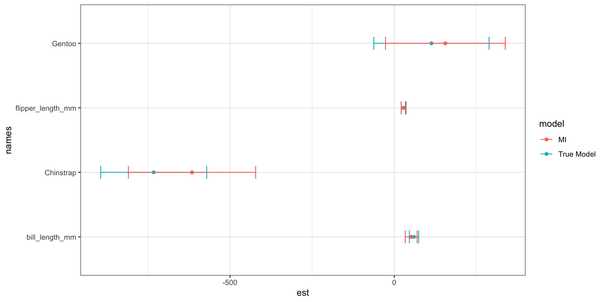
| names | True Model | MI | bias |
|---|---|---|---|
| bill_length_mm | 60.11732 | 51.61565 | -8.501672 |
| flipper_length_mm | 27.54429 | 28.67977 | 1.135481 |
| Chinstrap | -732.41667 | -615.76862 | 116.648049 |
| Gentoo | 113.25418 | 155.61083 | 42.356655 |
MI over estimates the difference in body mass between Chinstrap and Adelie, but underestiamtes that difference for Gentoo. There is also an underestimation of the relationship between bill length and body mass.
Sometimes you’ll have a need to do additional data management after imputation has been completed. Creating binary indicators of an event, re-creating scale variables etc. The general approach is to transform the imputed data into long format using complete with the argument include=TRUE , do the necessary data management, and then convert it back to a mids object type.
Continuing with the penguin example, let’s create a new variable that is the ratio of bill length to depth.
Recapping prior steps of imputing, and then creating the completed long data set.
## imp_pen <- mice(pen.miss, m=10, maxit=25, meth="pmm", seed=500, printFlag=FALSE)
pen_long <- complete(imp_pen, 'long', include=TRUE)We create the new ratio variable on the long data:
pen_long$ratio <- pen_long$bill_length_mm / pen_long$bill_depth_mmLet’s visualize this to see how different the distributions are across imputation. Notice imputation “0” still has missing data - this is a result of using include = TRUE and keeping the original data as part of the pen_long data.
ggboxplot(pen_long, y="ratio", x="species", facet.by = ".imp")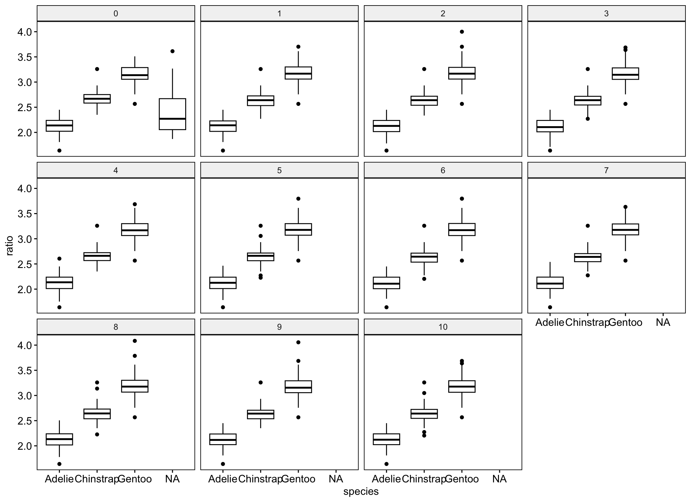
Then convert the data back to mids object, specifying the variable name that identifies the imputation number.
imp_pen1 <- as.mids(pen_long, .imp = ".imp")Now we can conduct analyses such as an ANOVA (in linear model form) to see if this ratio differs significantly across the species.
nova.ratio <- with(imp_pen1, lm(ratio ~ species))
pool(nova.ratio) |> summary() term estimate std.error statistic df p.value
1 (Intercept) 2.1221949 0.01435687 147.81738 281.7994 4.610006e-269
2 speciesChinstrap 0.5217842 0.02569344 20.30807 245.0315 1.958440e-54
3 speciesGentoo 1.0643029 0.02165568 49.14659 254.5258 6.526634e-132“In our experience with real and artificial data…, the practical conclusion appears to be that multiple imputation, when carefully done, can be safely used with real problems even when the ultimate user may be applying models or analyses not contemplated by the imputer.” - Little & Rubin (Book, p. 218)
Imputation methods for complex survey data and data not missing at random is an open research topic. Read more about this here

{kind=link}